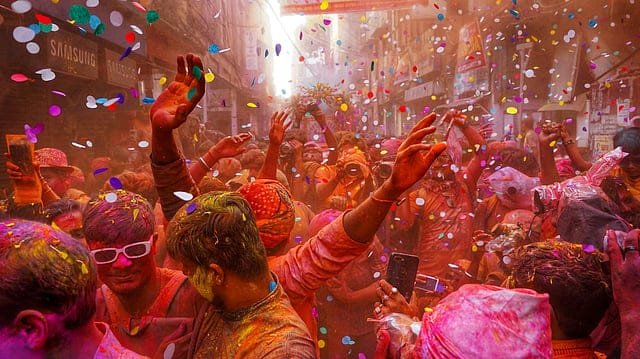
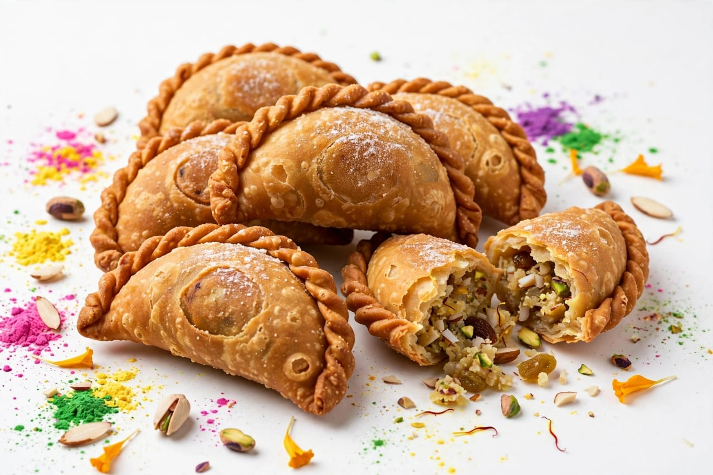
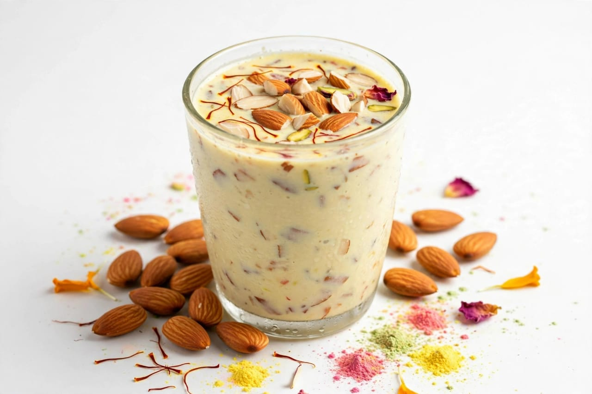
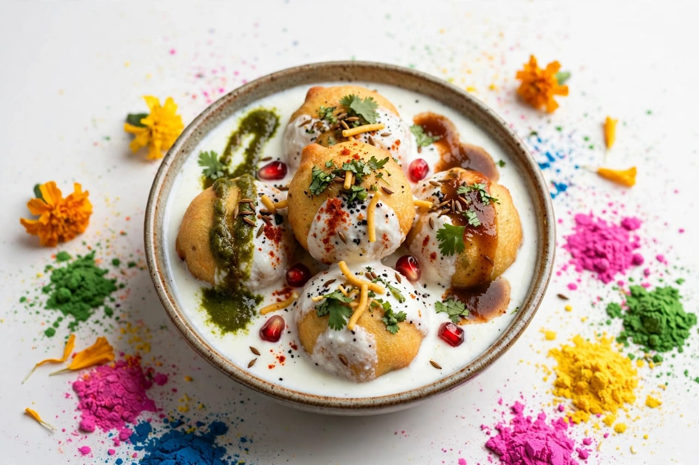

About Holi
Holi is one of the most popular festivals celebrated in India. It is known as the Festival of Colours. Holi is celebrated with great joy and enthusiasm. People celebrate Holi by using colourful powders. The festival represents happiness and togetherness. Holi is celebrated in many parts of India. It is especially popular in North India. The festival is also celebrated in other parts of the country. Holi usually comes during the spring season. It marks the arrival of spring. People clean and decorate their homes before the festival. Families prepare for the celebration with happiness. Holi has religious and cultural importance. The festival is connected with several traditional stories. One famous story is related to Prahlada and Holika. Prahlada was a devoted follower of Lord Vishnu. Holika was associated with the story of Prahlada. The story teaches the victory of good over evil. Holika Dahan is observed before the main Holi celebration. People gather around a traditional bonfire during Holika Dahan. Prayers are offered during this tradition. The bonfire symbolizes the victory of good over evil. The next day is commonly celebrated as Rangwali Holi. People play with colours during Rangwali Holi. Friends and families meet each other. People apply colours to each other. Children enjoy playing with colours. People wear comfortable clothes during the celebration. Music and dancing are common during Holi. Traditional songs are sung in many places. People visit relatives and friends. They exchange greetings and sweets. Holi creates a joyful atmosphere. The festival encourages people to forget differences. It promotes friendship and unity. People from different communities may join the celebrations. Holi is a festival of happiness and social togetherness. It brings people closer to each other. Holi is celebrated with faith and enthusiasm. The festival has an important place in Indian culture.
Holi is celebrated according to the Hindu calendar. The date of Holi changes every year. Holi is usually celebrated in the month of Phalguna. It generally occurs around February or March. Holika Dahan is performed on the night before Holi. People gather together for the ceremony. Traditional prayers are performed in many places. The next morning begins the colourful celebrations. People use different colours during Holi. Red, yellow, green and blue are commonly used. Coloured powders are called gulal. People may also use coloured water. Water balloons and water sprays are used in some celebrations. People should celebrate responsibly and safely. Natural colours can be a good choice for celebrations. People should avoid colours that may irritate the skin or eyes. Respecting other people's choice is important during Holi. Everyone should participate willingly. Holi is also connected with Lord Krishna in many traditions. Krishna is traditionally associated with playful colour celebrations. Vrindavan and Mathura are famous for Holi celebrations. Many visitors travel to these places during Holi. Special cultural programs are organized in many areas. Folk music and dances are performed. People enjoy traditional performances. Temples may organize special celebrations. Devotees sing devotional songs. Families prepare special dishes at home. Gujiya is one of the famous foods associated with Holi. Thandai is also traditionally associated with Holi. Sweets are shared among relatives and friends. People enjoy snacks during the celebrations. Holi strengthens social relationships. People meet old friends during the festival. Neighbours often celebrate together. The festival creates a sense of community. Holi encourages forgiveness and friendship. It spreads happiness and positivity. The colourful celebration makes the festival special. Holi is enjoyed by people of different age groups.
Holi has many regional traditions across India. Different states celebrate Holi in different ways. Some places have traditional processions. Some communities organize cultural events. People decorate temples and public places. Traditional clothing may be worn during celebrations. Food plays an important role in Holi celebrations. Families prepare sweets and snacks for guests. Gujiya is a popular sweet during Holi. Dahi vada is also enjoyed in some regions. People share food with family and friends. Holi is a time for family gatherings. It is also a time to meet neighbours and relatives. The festival encourages people to live together peacefully. It teaches the importance of kindness and friendship. Holi celebrates the beauty of colours and life. It brings joy to homes and communities. The festival is remembered for its fun and colourful traditions. Holi spreads a message of love, unity and happiness. Holi is an important and colourful festival of India.
Special Foods

Gujiya
Gujiya is a popular sweet prepared during Holi.

Thandai
Thandai is a traditional festive drink associated with Holi.

Dahi Vada
Dahi Vada is a popular snack enjoyed during celebrations.